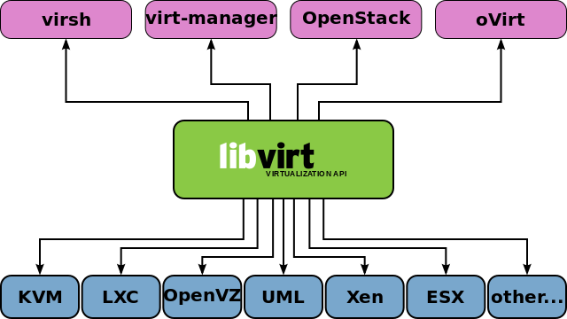
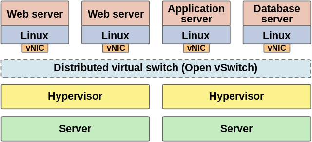

Kubernetes, Static Website, Git
Uzun bir aradan sonra Kubernetes ile ilgili bir konu ile yazilara basliyoruz. Bu yazida Kubernetes nedir? Ne degildir? gibi Kubernetes 101'den bahsetmek yerine bir senaryo ile ilgili sizlere fikir vermek istedim. Hemen kisaca senaryodan bahsedelim:
Senaryo:
Gunumuzde insanlar blog yazilarini yayinlamak icin static websites generator'lardan(nikola, jekyll, hugo vb.) birini kullanmaya yoneliyor. Daha onceden siklikla Wordpress kullanilirken artik bu sekilde bir cozum kullanimin farkli sebepleri olabilir. Bunu simdilik irdelemeyecegim. Bu senaryomuzda yukarda bahsettigimiz sekilde olusturdugunuz static websitenizi "Kubernetes uzerine git ile nasil otomatik update edebiliriz?" cozumu hakkinda fikir verecegim. Senaryo semasinin ayrintilari asagidaki gibidir:

Senaryoyu biraz daha ayrintilandirmak gerekirse, en alt katmandan en uste dogru cikalim. Bu senaryo icin volume olarak node uzerindeki Local diski kullandim. Bu production icin uygun olmasa da test ortamini olusturmak ve iki container'in ayni volume'u kullanabilmesi icin bunu sectim.
Warning
Production ortaminda kesinlikle local disk kullanmayin! Siz production ortamlariniz icin herhangi bir Clustered File System kullanabilirsiniz.
PersistentVolume ve PersistentVolumeClaim Olusturulmasi:
Burada bir noktaya deginmek gerekirse olusturacagimiz bu volume'u nginx container'i icin sadece readonly mount ederken git-sync icin ise hem read hem de write olacak sekilde mount edecegiz. git-sync belirledigimiz git reposunu buraya sync edecektir. Bu yuzden hem read hem write yetkisi gerekirken, nginx sadece sayfalari yayinlayacagi icin read yetkisi yeterlidir.
PersistentVolume:
apiVersion: v1 kind: PersistentVolume metadata: name: my-local-pv-01 spec: capacity: storage: 1Gi accessModes: - ReadWriteOnce persistentVolumeReclaimPolicy: Delete storageClassName: my-local-storage local: path: /mnt/disk1/vol1 nodeAffinity: required: nodeSelectorTerms: - matchExpressions: - key: kubernetes.io/hostname operator: In values: - node3
Yukardaki sekilde sadece node3 hostname'li node uzerindeki '/mnt/disk1/vol1/' uzerinde 1GB buyuklugunde persistentVolume olusturduk. Yukarida da belirttigim gibi kesinlikle production ortaminda local disk kullanmayin!
$ kubectl apply -f pv.yaml
persistentVolume olusturtuktan sonra persistentVolumeClaim olusturalim.( "pv ve pvc nedir?" merak ediyorsaniz buradan )
PersistentVolumeClaim:
kind: PersistentVolumeClaim apiVersion: v1 metadata: name: my-claim-01 spec: accessModes: - ReadWriteOnce storageClassName: my-local-storage resources: requests: storage: 1Gi
$ kubectl apply -f pvc.yaml
Volume olusturdugumuza gore artik yayinlayacagimiz static websitesi icin deployment asamasina gecebiliriz.
Deployment:
Asagidaki sekilde deployment olusturalim:
apiVersion: apps/v1 kind: Deployment metadata: name: blog spec: replicas: 1 selector: matchLabels: app: blog template: metadata: labels: app: blog spec: containers: - name: git-sync image: k8s.gcr.io/git-sync/git-sync:v3.2.0 volumeMounts: - name: www-persistent-storage mountPath: /tmp/git env: - name: GIT_SYNC_REPO value: https://github.com/user_name/blog.example.com.git - name: GIT_SYNC_DEST value: "blog" - name: GIT_SYNC_WAIT value: "10" - name: www image: nginxinc/nginx-unprivileged ports: - containerPort: 8080 volumeMounts: - name: www-persistent-storage mountPath: /usr/share/nginx/html readOnly: true volumes: - name: www-persistent-storage persistentVolumeClaim: claimName: my-claim-01 nodeSelector: kubernetes.io/hostname: node3 --- apiVersion: v1 kind: Service metadata: name: blog-svc spec: ports: - port: 80 targetPort: 8080 protocol: TCP name: http selector: app: blog
git-sync environment degerlerinden GIT_SYNC_REPO yerine git reponuzu ve GIT_SYNC_DEST degerini isteginize gore degistirebilirsiniz.
$ kubectl apply -f deployment.yaml
Deployment olusturulup tamamlandiktan sonra websitemizi yayinlamak icin ingress olusturabiliriz.
apiVersion: networking.k8s.io/v1beta1 kind: Ingress metadata: name: blog-ingress spec: # ingressClassName: nginx # use only with k8s version >= 1.18.0 rules: - host: blog.example.com http: paths: - path: /blog backend: serviceName: blog-svc servicePort: 80
$ kubectl apply -f ingress.yaml
ingress tanimlamamiz da yapildigina gore http://blog.example.com/blog adresinden websitemize ulasabiliriz. Artik git uzerine sayfalarinizi push'ladiktan sonra sayfaniz otomatik guncellenecektir. Umarim size fikir vermistir.
OpenLDAP Schema for Postfix
If you configure postfix-dovecot with OpenLDAP, you will need specific LDAP's attributes. So I writed a schema.
- postfix-new.schema:
4 Attributes ( mailacceptinggeneralid, maildrop, mailEnabled, mailQuota )
1 ObjectClass ( postfixUser )
Libvirt ve OpenvSwitch
Bu yazimda libvirt ile openvswitch entegrasyonu hakkinda giris seviyesinde adim atacagiz. Kurulum ve entegrasyona gecmeden once bu iki yazilim nedir, ne degildir onlari taniyalim.
Libvirt 1 , Redhat tarafindan 2005'ten bu yana gelistirilmeye devam eden sanallastirma ortamlari icin daemon, API ve yonetim aracidir.
Libvirt bilinen bir cok hypervisor'u desteklemektedir. Iste bunlardan bazilari:
KVM
LXC
OpenVZ
Xen
User-mode Linux (UML)
Virtualbox
VMware ESX
VMware Workstation
Hyper-V
PowerVM
Parallels Workstation
Bhyve
OpenvSwitch 2 , kisaca sanal multilayer network switchtir. OpenvSwitch, bir SDN switch olarak hypervisor uzerindeki sanal makineleri fiziksel olarak ayri bulunan network switchler ile entegre calisarak yonetebilir.
Birden fazla protokolu desteklemektedir:
NetFlow
sFlow
SPAN
RSPAN
CLI
LACP
802.1ag
Kurulum:
Paket yoneticiniz ile libvirt ve openvswitch kurulumunu yapalim. Siz kendi dagitiminiza ve paket yoneticinize gore kurulumu yapabilirsiniz. Gentoo uzerinde, libvirt icin gerekli "USE FLAG"lari aktif edip kurulumunu yapalim.Binary dagitimlar icin buna gerek yoktur. Siz direk paket yoneticiniz ile kurulumu yapin.
/etc/portage/package.use/libvirt:
app-emulation/libvirt macvtap vepa qemu virt-network
Simdi kurulumu yapabiliriz.
# emerge -av libvirt
OpenvSwitch kurulumunu yapalim.
# emerge -av openvswitch
Sistem baslangici icin bu servisleri enable edelim.
# rc-update add ovsdb-server default # rc-update add ovs-vswitchd default # rc-update add libvirtd default # rc-update add libvirt-guests default
Note
openvswitch ve kvm kernel modullerinin yuklendiginden emin olunuz. Kernel uzerinde aktif etmek icin openvswitch , qemu.
Sistem acilisinda bu modullerin yuklenmesi icin
/etc/conf.d/modules:
modules_4="openvswitch kvm kvm_intel tun"
Servisleri baslatalim.
# /etc/init.d/ovsdb-server start # /etc/init.d/ovs-vswitchd start # /etc/init.d/libvirtd start # /etc/init.d/libvirt-guests start
Ansible Gentoo-Portage Update
Ansible Portage module 1 ile Gentoo Linux sisteminizi guncelleyebilir ve upgrade edebilirsiniz. Asagidaki ornekte Ilk once buildfarm adini verdigimiz sunucu uzerinde compile edilip diger gentoo sunucularimiza binary paketleri elde edip guncellemelerini yapmaktadir.
Yukarda bahsettigim sekilde bir buildfarm sunucusu yani paketlerin compile edilecegi sunucuda binary paketleri uretip diger sunuculara bu binary paketleri sunmak icin portage uzerinde "buildpkg" ozelligini aktif etmek gerekmektedir.
/etc/portage/make.conf:
FEATURES="buildpkg"
Diger Gentoo sunucularin buildfarm uzerindeki paketleri alabilmesi icin yayinlamasi gerekli. Bunun birden fazla sekilde kendinize cozum saglayabilirsiniz. FTP, FTPS, NFS, SSH, HTTP, HTTPS gibi. Biz kucuk bir web sunucusu kurup paketleri bu sekilde yayinlayalim.
# emerge -av www-servers/lighttpd
lighttpd web sunucusunu kurduktan sonra olusturulan paketlerin buradan yayinlanmasini konfigure edelim."/etc/lighttpd/lighttpd.conf" dosyasinin sonuna asagidaki iki satiri ekleyin.
/etc/lighttpd/lighttpd.conf:
server.modules += ( "mod_alias" ) alias.url = ( "/packages" => "/usr/portage/packages/" )
Artik web sunucumuzu baslatabiliriz.
# rc-update add lighttpd default # /etc/init.d/lighttpd start
Buildfarm sunucumuz ile ayarlarimiz bu kadar. Artik diger sunucularimizi buildfarm sunucusu uzerinden binary paketleri almasi icin konfigure edebiliriz.
/etc/portage/make.conf:
FEATURES="getbinpkg" PORTAGE_BINHOST="http://buildfarm.hostname/packages"
Artik ansible ile sistemizi ilk once buildfarm ile derlenip binary paketler ile diger sunucularinizi guncelleyebilirsiniz.
Ansible SSH Keys Deployment
Ansible authorized_key modulu 'delegate_to' ile sunuculara sshkey'leri deploy ederken bazi sshkey'lerin eklenmedigini gorebilirsiniz. Boyle bir sorun ile karsilasmamak icin asagidaki gibi bu module ihtiyac olmadan sshkey'leri ekleyebilirsiniz.
Nginx Reverse Proxy Cache
Bir websitesinin olmazsa olmaz unsurlardan biri performansli sekilde calismasidir. Performans ise birden fazla etkene bagli olabilir. Bu etkenler yazilan kodun kalitesinden tutun da websitenin yayinlandigi altyapiya kadar bagli olabilir. Fakat son kullanici sizin mukemmel kod kalitenize ya da sarsilmaz altyapiniza bakmaksizin kendine onune gelen performansdan memnun kalacaktir. Ayni zamanda dunyanin en iyi kodlarina yazarak cok iyi bir altyapi ile websitenizi yayina surseniz dahi kullaniciya giden iletisim surecleri belirlidir.
Bu yazida daha iyi bir performans ve hizli bir websitesi icin nginx uzerinde "content cache" hakkinda biraz bilgi vermeye calisacam. "Content Cache" kullanici ile proxy cache sunucusu arasinda saglanir. Asagidaki topolojiden inceleyebiliriz:

Yukarda topolojide goruldugu gibi 'Client I' kullanicisi, reverse proxy sunucusu arkasindaki origin sunuculara ulasmaksizin website uzerindeki iceriklere reverse proxy uzerinden ulasir. Origin sunuculardan hic bir icerik istenmez.
Konfigurasyon:
Content cache islemi nginx uzerinde basit olarak "proxy_cache_path" ve "proxy_cache" konfigurasyonlari ile ayarlanabilir. Ilk olarak "/etc/nginx/nginx.conf" dosyasi icinde "http{}" arasina "proxy_cache_path" konfigurasyonunu girelim.
proxy_cache_path /var/cache/nginx levels=1:2 keys_zone=cache:10m max_size=1g inactive=60m use_temp_path=off;
Yazdigimiz konfigurasyonu inceleyelim:
- /var/cache/nginx
-
cache icin kullanilacak dizin. Eger bu dizin olusturulmamissa olusturun ve nginx kullanicisina yazma hakkini verdiginize emin olun.
# mkdir -p /var/cache/nginx # chown nginx:nginx /var/cache/nginx
- levels=1:2
-
Nginx yukarda olusturdugumuz dizin altinda two-level directory ile cachelenen tum icerikleri tek bir dizin altinda degilde two-level dizin altinda tutmasini istiyoruz. Eger levels konfigurasyonunu yapmazsaniz nginx tum icerikleri tek bir dizin altinda toplayacak ve buyuk boyutlu cachelenen iceriklerde dosyaya erisim hizlari azalacaktir.
- keys_zone=cache:10m
-
Burada nginx cache key'ler icin shared memory zone olusturuyor. Cachelenen icerigi diske erisimi saglamadan direk olusturulan bu zone uzerinde okumasini sagliyor. "10m" ise cachelenecek olan keys buyuklugunu ayarliyoruz. 1 MB zone 8000 keys, 10MB zone 80000 keys icerebilir. Kendi cachelenecek sisteminize gore bu buyuklugu ayarlayabilirsiniz.
- max_size=1g
-
Cachelenecek maksimum buyuklugu ifade eder.
- inactive=60m
-
Cachelenmis bir icerige herhangi bir erisim olmuyorsa ne kadar sure sonra inactive olmasini ayarlar.
- use_temp_path=off
-
Nginx yukarda bahsettigimiz '/var/cache/nginx' dizinine yazmadan once gecici olarak bir dizine yazmasini ya da ikinci bir dizine yazmayi kapatmayi ayarlar. Onerilen ikinci bir yazma olmamasi icin bu ayari her zaman "off" olarak ayarlamaniz.
"proxy_cache_path" ile ilgili kismimiz bu kadar. Artik herhangi bir upstream sitemiz ile ilgili ayarlamalarimizi yapalim. Asagidaki konfigurasyonlari tekil dosya kullaniyorsaniz "/etc/nginx/nginx.conf" dosyasi icinde, ayrisik konfigurasyon kullaniyorsaniz ornek olarak "/etc/nginx/conf.d/upstream01.conf" icinde "location / {}" arasinda ayarlamaniz gerekmektedir.
Ornek olarak:
location / { proxy_cache cache; proxy_cache_valid 200 302 60m; proxy_cache_valid 404 1m; proxy_cache_revalidate on; proxy_cache_min_uses 3; proxy_cache_use_stale error timeout updating http_500 http_502 http_503 http_504; proxy_cache_background_update on; proxy_cache_lock on; add_header X-Proxy-Cache $upstream_cache_status; proxy_ignore_headers Set-Cookie; proxy_pass http://upstream01; }
Yukarda yazdigimiz konfigurasyona kisaca goz atalim.
- proxy_cache cache;
-
proxy_cache_path konfigurasyonunda olusturdugumuz shared memory zone adini belirttik.
- proxy_cache_valid 200 302 60m;
-
HTTP cevap kodu 200 ile 302 donen sayfalarin cache suresi 60 dakika olmasini belirttik.Kendi sisteminize gore konfigure edebilirsiniz.
- proxy_cache_valid 404 1m;
-
404 cevabi donen sayfalarin cache surelerini 1 dakika olarak ayarladik. Kendi sisteminize gore konfigure edebilirsiniz.
- proxy_cache_revalidate on;
-
Nginx, origin sunuculardan GET istegi gondererek icerekleri yeniler. Nginx 'If-Modified-Since' ve 'Last-Modified' cache control headerlari ekleyerek, cache kontrolunu yapar.Bir kullanici guncellenmis bir icerige istek yaparsa nginx sadece guncellenen icerigin cacheni yenileyerek performans ve band genisligininden tasarruf saglar.
- proxy_cache_min_uses 3;
-
Nginx, bir icerigin cachelenmesi icin minimum istek sayisini belirtemeniz halinde icerigi cacheleyecektir. Default olarak 1 olan istegi ben 3 yaptim. Kendi isteginize ve sisteminize gore konfigure edebilirsiniz.
- proxy_cache_use_stale error timeout updating http_500 http_502 http_503 http_504;
-
Eger origin sunuculari down olursa ya da hata verirse cachelenmis icerigi kullanicilari sunar.
- proxy_cache_background_update on;
-
Yukardaki 'stale' konfigurayonunda belirttigimiz hata aninda cachelenmis icerigi yayinlamasi icin iceriklerin backgrounddan guncellenmesi direktifini verir.
- proxy_cache_lock on;
-
Eger birden fazla kullanici ayni anda cachelenmemis bir icerige istek yollarsa sadece bir tanesinin istegi origin servera gonderilerek cachelenmesi saglanir.Diger istek ya da istekler icerik cachelenme islemi bitine kadar bekletilir.
- add_header X-Proxy-Cache $upstream_cache_status;
-
HTTP header'i icine 'X-Proxy-Cache' headerini ekler. Bu basligi eklemek daha sonra proxy cache isleminin calisip calismadigini kontrol etmek icin kullanabilirsiniz.
- proxy_ignore_headers Set-Cookie;
-
'Set-Cookie' headerinin cachelenmemesini belirttik.
Test:
Yukardaki gibi konfigurasyonlari girip nginx web sunucunuzu reload/restart ettikten sonra Proxy Cache'in calisip calismadigini test edelim.
$ curl -I http://www.example.com HTTP/1.1 200 OK Server: nginx ... X-Proxy-Cache: HIT
'X-Proxy-Cache' headeri, gonderilen istedigin gecerli oldugunu ve cevabin cache'den gonderildigi gosteriyor.
Diger Cache status cevaplari:
- MISS:
-
Gonderilen istedigin gecersiz oldugunu ve cache icinde istek gonderilen sayfanin olmadigini belirtir. Cevap origin sunucudan kullaniciya gonderilmistir.
- BYPASS:
-
Gonderilen icerik direk olarak origin sunuculardan kullaniciya gonderilmistir.
- EXPIRED:
-
Icerik cache uzerinde suresi dolmus ve origin sunucu uzerinden gonderilmis.
- STALE:
-
Origin sunucular cevap vermedigini ve icerigin cache uzerinden verildigini belirtir.
- UPDATING:
-
Icerigin stale durumda oldugunu ve bir onceki istek ile guncellemede oldugunu belirtir.
- REVALIDATED:
-
Daha once yukarida(proxy_cache konfigurasyonu kisminda) acikladigim gibi revalidated isleminde oldugunu belirtir.
Sizde yapmis oldugunuz konfigurasyonu test ederek cache durumunuzu kontrol edebilirsiniz. Kolay gelsin :)
Locust: Load Testing Tool
Locust, kullanimi diger uygulamalara gore kolay distributed load testing aracidir. Websitenizi ya da diger sistemlerinizi kullanici sayilarini simule ederek yazdiginiz kodlari ya da sistemlerinizi load testing yaparak kontrol etmenize olanak saglar.
Locust'un ozellikleri:
Kolay test senaryosu yazma. Diger araclara gore daha sade ve kolay syntax ile yazabilme. Python'a asina olanlar icin yabancilik cekmeyecekleri sekilde python kod.
Distributed load testing. Tekil ya da coklu makinelerle load testing yapabilme. Ister kullandiginiz bir bilgisayarla isterse 20 makine ile test yapabilme imkani.
Webarayuzu. Locust HTML+JS ile size realtime test sonuclarini webarayuzunden izleyebilme imkani sagliyor.
Her turlu sistemi test edebilirsiniz. Sadece websitelerini degil ldap,smtp gibi servis verdiginiz her turlu sistemleri biraz python biliyorsaniz client kod vs yazayarak test edebilirsiniz.
Apache JMeter gibi java bagimliliginiz kalmadan bu testlerinizi yapabilirsiniz.( JMeter uzerinde SSL sertifikaniz 4096 bit gibi yuksek sifrelenmis ise javanin en yuksek 2048 bit desteklemesi yuzunden basarili olamayabilirsiniz. )
Kurulumu
Locust, Python 2.7, 3.3, 3.4, 3.5,3.6. versiyonlarini desteklemektedir. Sistemizdeki 'pip' kurulu oldugundan emin olun. Bir cok modern sistemlerde halihazirda kurulu olarak zaten geliyor.
# pip install locustio
Eger sadece kendi kullaniciniz icin kuracaksaniz;
$ pip install --user locustio
Ardindan '~/.local/bin/' dizinini "PATH'inize ekleyin. GNU/Linux dagitiminiza ya da sisteminize gore '.bashrc' ya da 'bash_profile' dosyaniza eklemeniz gerekir.
PATH=$PATH:~/.local/bin
Kurulum adimlari bu kadar.
Note
Son olarak not dusmek gerekir. Eger load testing yaparken yuksek sayida kullanici ile senaryo gerceklestirecekseniz sistemiz ve load-testing yapan kullaniciniz icin file-limit degerlerini yukseltmeniz gerekebilir.
Ilk olarak sistemiz uzerinden file-limit degerini ogrenip yukseltmek icin;
# cat /proc/sys/fs/file-max 75000
Yukarda goruldugu gibi sistem uzerinde file-limit degeri '75000'. Bu degeri ornek olarak '750000' yukseltmek icin;
# sysctl -w fs.file-max=750000
Sistem uzerinde kalici olarak degistirmek icin, "/etc/sysctl.conf" dosyasina asagidaki satiri ekleyin.
fs.file-max = 750000
Aktif etmek icin;
# sysctl -p
Bu limit degerlerini sisteme giris yaptiginiz ya da test yapacaginiz kullanici icin yukseltmek icin '/etc/security/limits.conf' dosyaniza asagidaki gibi degerleri ekleyin;
## hard limit kullanici1 hard nofile 10000 ## soft limit kullanici1 soft nofile 5000
Yaptiginiz degisikligin aktif olmasi icin cikis yapip tekrar giris yapmaniz gereklidir.
Senaryo olusturma
Locust icin cesitli senaryolar yazabilirsiniz. Iki basit ornek verelim.
Ornek 1: Websitenizin anasayfasini ve hakkimda sayfalarini test etmek icin load-testing senaryosu yazalim.
from locust import HttpLocust, TaskSet, task class MyTaskSet(TaskSet): @task(2) def index(self): self.client.get("/") @task(1) def about(self): self.client.get("/hakkinda/") class MyLocust(HttpLocust): task_set = MyTaskSet min_wait = 5000 max_wait = 15000
'min_wait' ve 'max_wait' degerleri simule eden kullanicilarin bu sureler arasinda istek yapmasini gosterir.
Ornek 2: Websitenizin login sayfasina kullanici ile giris yapip, anasayfasini ve profile sayfasini test senaryosu yazalim.
from locust import HttpLocust, TaskSet def login(l): l.client.post("/login", {"username":"ellen_key", "password":"education"}) def index(l): l.client.get("/") def profile(l): l.client.get("/profile") class UserBehavior(TaskSet): tasks = {index: 2, profile: 1} def on_start(self): login(self) class WebsiteUser(HttpLocust): task_set = UserBehavior min_wait = 5000 max_wait = 9000
Load-Testing Yapmak
Locust ile yazdigimiz senaryolar ile load-testing yapmak icin;
$ locust --host=http://example.com
ya da yazdigimiz senaryo dosyasinin yolunu belirterek;
$ locust -f locust_files/my_locust_file.py --host=http://example.com
Test basladiktan sonra tarayiciniza 'localhost:8089' yazarak kullanicilari simule edip testinizi izleyebilirsiniz.
FreeIPA ve Active Directory Entegrasyonu
- Kurulum oncesi hazirlik:
- FreeIPA Server 4.4.0-14 ( CentOS 7 )
IPA Server IP Adresi: 172.16.183.128
IPA Server Hostname: ipaserver.piesso.local
IPA Domain: piesso.local
IPA Netbios: PIESSO
IPA Kerberos realm: PIESSO.LOCAL
- Windows Server 2012 R2
Active Directory IP Adresi: 172.16.183.132
Active Directory Hostname: ad.pencere.local
Active Directory Domain: pencere.local
Active Directory Netbios: PENCERE
Windows Server 2012 R2 ve FreeIPA icin kerberos ticket vs gibi sorunlar yasanmamasi icin ntp ile zaman esitlemesi mutlaka baslatilmalidir. FreeIPA kurulumunda ontanimli olarak ntp client "time sync" islemini ntp pool'larindan alarak esitlemektedir. Fakat Windows Server 2012 R2 uzerinde de bunu yapmak icin manuel ntp pool sunucularini girip zaman servisini yeniden baslatilmasi gerekmektedir.
Warning
2016 Bakanlar Kurulu karari ile yaz saati uygulamasi sona erdigi icin zaman diliminin "+3" oldugunu kontrol edin.
(Powershell uzerinde)
> net stop w32time > w32tm /config /syncfromflags:manual /manualpeerlist:0.centos.pool.ntp.org, 1.centos.pool.ntp.org, 2.centos.pool.ntp.org” > w32tm /config /reliable:yes > net start w32time
FreeIPA ve Active Directory Cross-Realm Trust:
Ilk olarak "ipa-adtrust-install" paketini repodan kuralim:
# yum install ipa-adtrust-install
IPA Server uzerinde cross-realm islemi icin:
# ipa-adtrust-install --netbios-name=PIESSO -a password
Firewall Konfigurasyonu:
Windows Server uzerinde firewall uzerindeki kurallar otomatik olarak ekleniyor. Fakat IPA Server uzerinde asagidaki portlarin acik olmasi gerekmektedir.
TCP ports: 80, 88, 443, 389, 636, 88, 464, 53, 135, 138, 139, 445, 1024-1300 UDP ports: 88, 464, 53, 123, 138, 139, 389, 445
Centos 7 ile birlikte gelen firewall manager firewalld spesifik servisleri acmak icin halen yetersiz oldugu icin bunu disabled edip yerine klasik iptables'i aktif edelim:
# systemctl disable firewalld # systemctl stop firewalld # yum install -y iptables-services # systemctl enable iptables
"/etc/sysconfig/iptables" dosyasina gerekli olan portlari acmak icin kurallarimizi girelim:
\*filter :INPUT ACCEPT [0:0] :FORWARD ACCEPT [0:0] :OUTPUT ACCEPT [0:0] -A INPUT -m state --state ESTABLISHED,RELATED -j ACCEPT -A INPUT -p icmp -j ACCEPT -A INPUT -i lo -j ACCEPT -A INPUT -m state --state NEW -m tcp -p tcp --dport 22 -j ACCEPT -A INPUT -s ad_ip_address -p tcp -m multiport --dports 389,636 -m state --state NEW,ESTABLISHED -j REJECT -A INPUT -p tcp -m multiport --dports 80,88,443,389,636,88,464,53,138,139,445 -m state --state NEW,ESTABLISHED -j ACCEPT -A INPUT -p udp -m multiport --dports 88,464,53,123,138,139,389,445 -m state --state NEW,ESTABLISHED -j ACCEPT -A INPUT -p udp -j REJECT -A INPUT -p tcp -j REJECT -A FORWARD -j REJECT --reject-with icmp-host-prohibited COMMIT
Iptables servisini baslatabiliriz:
# systemctl start iptables
DNS Forward Zone:
Active Directory ve FreeIPA'yi inbound ve outbound trust olarak isaretlemeden DNS Forward Zone'lari ekleyelim.
Windows Server 2012 R2 uzerinde:
> dnscmd 127.0.0.1 /ZoneAdd piesso.local /Forwarder 172.16.183.128
FreeIPA Server uzerinde:
# ipa dnsforwardzone-add pencere.local --forwarder=172.16.183.132 --forward-policy=only
Forwarder DNS zone'larin dogru sekilde eklenip eklenmedigi iki tarafta da kontrol edelim:
Windows Server 2012 R2 (PowerShell):
> nslookup > set type=srv > _ldap._tcp.ad_domain > _ldap._tcp.ipa_domain > quit
FreeIPA Server uzerinde:
# dig SRV _ldap._tcp.ipa_domain # dig SRV _ldap._tcp.ad_domain
Cross-Realm Trust:
Freeipa ile Active Directory arasinda "Two-way trust" konfigurasyonu:
# ipa trust-add --type=ad pencere.local --admin Administrator --password --two-way=true
"Two-way trust" baglantisinin basarili sekilde kurulup kurulmadigini kontrol edelim:
# ipa trust-fetch-domains "pencere.local" # ipa trustdomain-find "pencere.local"
IPA Client Kurulumu
- Kullanilan yazilimlar:
-
Centos Linux 7.2
ipa-client
ipa-admin-tools
-
Kurulum Oncesi Hazirlik:
FQDN = ipaclient.piesso.local IP = 172.16.183.135/24 IPA Server = ipa.piesso.local IPA DOMAIN = piesso.local IPA NETBIOS = PIESSO
Kuruluma baslamadan once kontrol edilmesi gerekenler;
Hostname
/etc/hosts
Sistem update
Hostname:
# hostnamectl set-hostname ipaclient.piesso.local
/etc/hosts:
172.16.183.135 ipaclient.piesso.local ipaclient 172.16.183.128 ipa.piesso.local
Sistem update:
# yum update -y
Kurulum:
ipa-client ve ipa-admintools yazilimlarinin repodan kurulmasi;
# yum install ipa-client ipa-admintools
ipa-client kurulumu;
# ipa-client-install --domain PIESSO.LOCAL --server ipa.piesso.local --realm PIESSO -p host/ipa.piesso.local --enable-dns-updates --force-ntpd
IPA Client ve Kerberos Ticket Testi:
FreeIpa sunucusundaki admin kullanicisi ve parolasi ile giris yapin;
# getent passwd admin # getent group admins
Kerberos'tan ticket alimi;
# kinit admin
Ticketin basarili alinip alinmadigi kontrolu;
# klist
Hersey saglam gorunuyorsa client dns'lerini FreeIPA Server adresine donusturulmesi;
/etc/resolv.conf:
search piesso.local nameserver 172.16.183.128
Centos 7 uzerine FreeIPA Kurulumu
Kullanilan yazilimlar:
Centos Linux 7.2
ipa-server 4.2.0
ipa-server-dns 4.2.0
bind-dyndb-ldap 8.0
bind 9.9.4
Kurulum Oncesi Hazirlik:
- FQDN
-
ipa.piesso.local
- IP
-
172.16.183.128/24
- IPA DOMAIN
-
piesso.local
- IPA NETBIOS
-
PIESSO
Kuruluma baslamadan once kontrol edilmesi gerekenler;
Hostname
/etc/hosts
Statik IP
Sistem update
1. Hostname:
# hostnamectl set-hostname ipa.piesso.local
2. /etc/hosts:
172.16.183.128 ipa.piesso.local ipa
3. Statik IP:
Ornek statik ip konfigurasyonu "/etc/sysconfig/network-scripts/ifcfg-xxxx"
ONBOOT= yes BOOTPROTO= none IPADDR= 172.16.183.128 PREFIX= 24 GATEWAY= 172.16.183.2 DNS1= 8.8.8.8 DNS2= 8.8.4.4 DEFROUTE= yes
4. Sistem update:
# yum update -y
Kurulum:
ipa-server, integrated dns, ad trust ve ldap back-end plugin yazilimlarinin repodan kurulmasi;
# yum install ipa-server ipa-server-dns bind-dyndb-ldap ipa-server-trust-ad
ipa-server kurulumu;
# ipa-server-install -a IpaAdminpassword -p IpaManagerpassword --domain=piesso.local --realm=piesso.local --setup-dns --no-forwarders -U
ipa-server kurulumu asagidaki sekilde basari ile biterse firewalld daemonuna gerekli port izinlerinin verilmesi;
Restarting the web server ============================================================================== Setup complete Next steps: 1. You must make sure these network ports are open: TCP Ports: * 80, 443: HTTP/HTTPS * 389, 636: LDAP/LDAPS * 88, 464: kerberos * 53: bind UDP Ports: * 88, 464: kerberos * 53: bind * 123: ntp 2. You can now obtain a kerberos ticket using the command: 'kinit admin' This ticket will allow you to use the IPA tools (e.g., ipa user-add) and the web user interface. Be sure to back up the CA certificate stored in /root/cacert.p12 This file is required to create replicas. The password for this file is the Directory Manager password
# firewall-cmd --permanent --add-service={http,https,ldap,ldaps,kerberos,dns,kpasswd,ntp} # firewall-cmd --reload
Firewall kurallarinin kontrol edilmesi;
# firewall-cmd --list-services
IPA Server ve Kerberos Ticket Testi:
Kerberos'tan ticket alimi;
# kinit admin
Ticketin basarili alinip alinmadigi kontrolu;
# klist
ipa-server servislerinin kontrolu;
# ipactl status
Hersey saglam gorunuyorsa sunucu dnslerini local adrese donusturulmesi;
/etc/resolv.conf:
search piesso.local nameserver 127.0.0.1